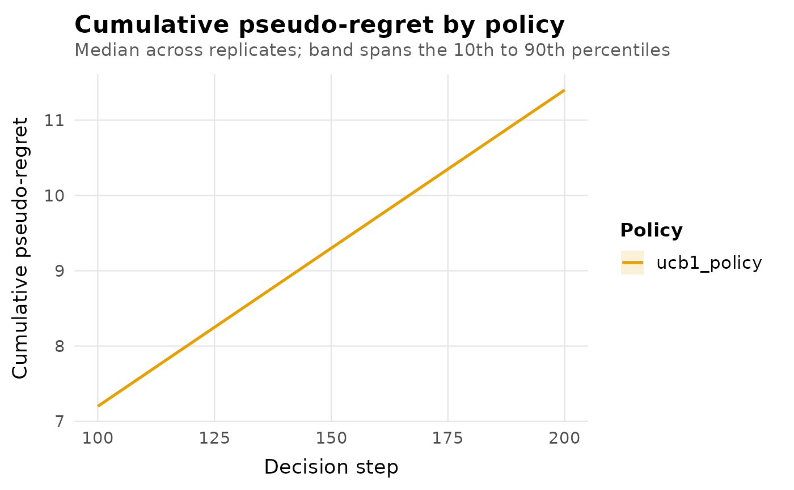

The default theme applied by autoplot.bandit_result(). Built on
ggplot2::theme_minimal() with a typographic hierarchy (a bold
title, a muted subtitle, restrained axis text) and reduced grid
clutter, so a plot reads clearly at report or slide size without
extra styling calls.
Arguments
- base_size
Base font size in points, as in
ggplot2::theme_minimal().
Details
No custom font family is set: fonts available at render time vary across operating systems, and requiring one would add a dependency and a portability risk out of proportion to the benefit. The theme improves hierarchy (size and weight relationships between title, subtitle, axis titles and axis text) and spacing instead, which is portable everywhere R renders a plot.
Like every ggplot2 theme, this one is a starting point: add
+ ggplot2::theme(...) afterwards to override any element, or
replace it entirely with + ggplot2::theme_bw() or your own theme.
Examples
env <- bandit_bernoulli(c(a = 0.2, b = 0.5))
result <- run_experiment(env, policy_ucb1(), horizon = 200, seed = 1,
checkpoints = c(100, 200))
autoplot(result) + theme_banditlab(base_size = 14)
